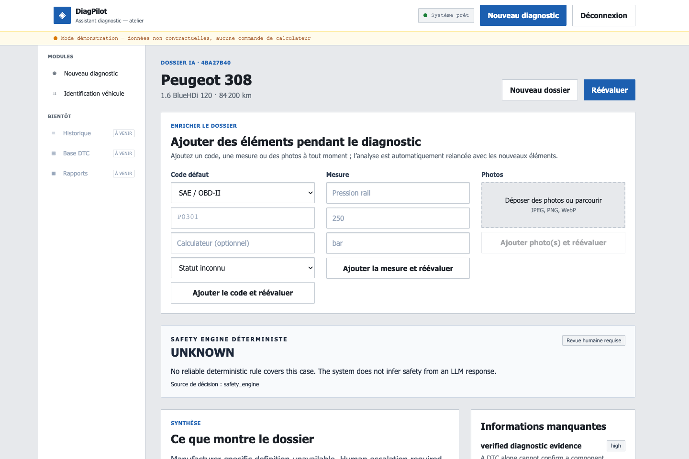

The right vehicle.
The right scope.
Keep the vehicle, engine, ECU and diagnostic namespace visible. An uncertain match stays uncertain.
INDEPENDENT THINKING. AUTOMOTIVE INTELLIGENCE.
A new direction for automotive diagnostics.
Built around context. Grounded in evidence.
Designed to keep the technician in control.
CONCEPT SCULPTURE · NOT A VEHICLE SIMULATION
The ambition is simple: make the reasoning behind a diagnostic result as visible as the result itself.
ORVECT is building a context layer for independent workshops. Vehicle configuration, source provenance and evidence come before an AI explanation.
See what sits beneathKeep the vehicle, engine, ECU and diagnostic namespace visible. An uncertain match stays uncertain.
Preserve provenance and compatibility. An unavailable definition is reported as unavailable.
Separate interpretation from critical decisions. Zero hypotheses is a valid diagnostic outcome.
This demonstration shows a deliberate boundary: when the definition and evidence are missing, the system asks for human review.

A missing definition should never become an invented answer.
Three distinct layers within one modular application. Fluency is not a substitute for evidence.

Structured diagnostic state, explicit ambiguity and no obligation to produce an answer.
Critical boundaries belong to rules. When no reliable rule exists: unknown / human review.
The LLM communicates within those boundaries. It does not independently authorize driving or a definitive replacement.
Volkswagen Group is our intended first specialist focus.
The next step is licensed diagnostic depth and structured workshop validation — not a claim of coverage we have yet to earn.
Target scope only. No manufacturer affiliation, partnership or admitted licensed VAG production corpus today. Hardware integration and real-workshop validation remain future work.
Context, provenance, evidence gates and a local demonstration.
Secure reuse rights and validate a real production data profile.
Structured pilots, documented feedback and measured outcomes.
Automotive curiosity.
Entrepreneurial intent.
Business and Economics student at the Stockholm School of Economics, independent web product builder and founder of cross-border automotive association Col de l’Est.
Building ORVECT with a clear next priority: licensed data and documented technician validation.
Save my contactINVESTORS. WORKSHOPS. DATA PROVIDERS.
Challenge the thesis.
Help shape what comes next.